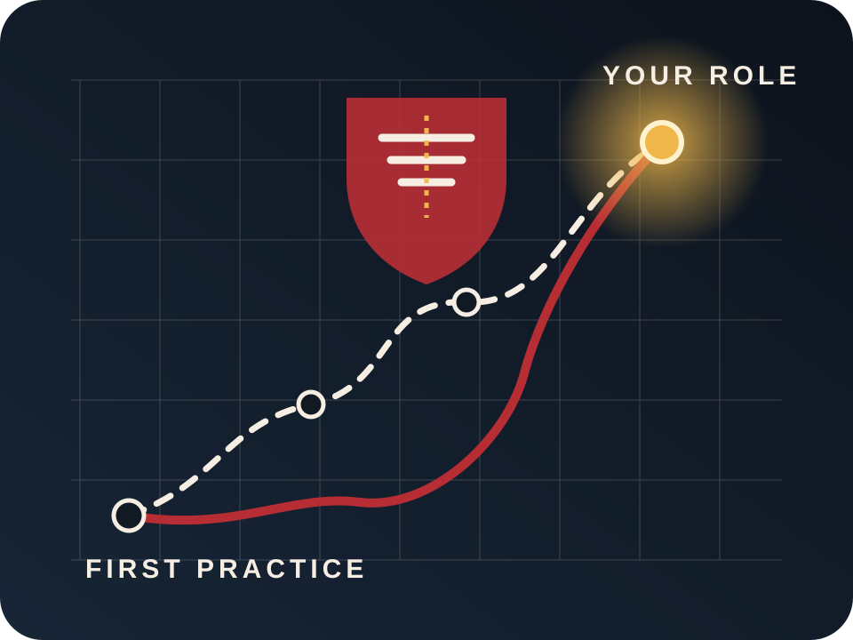

Training camp
Kungsängens IP. Preparation and team-building before the tournament.
2026 Season
A combined squad, a national series and a season built around giving young players real opportunities to develop.
Ask about joining U18
Confirmed roadmap
Kungsängens IP. Preparation and team-building before the tournament.
Lillegårdens IP, Skövde. Three days at Sweden’s largest youth American football tournament.
The national U18 season opener.
Dates and locations are based on the official Broncos U18 calendar checked on 18 July 2026. Always verify current details with the team.
National competition
The combined squad is scheduled to meet teams from Stockholm, central Sweden and southern Sweden.
Why collaborate?
Smaller American football clubs often collaborate so young players can access full-format competition, travel, coaching and a sustainable team environment.
The Broncos reported a squad of around 20 players in May 2026, combining club-developed athletes, returning players, new players and Rebels participants.
Read the official collaboration update ↗